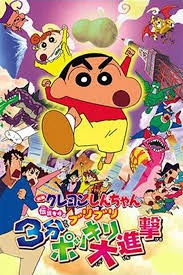
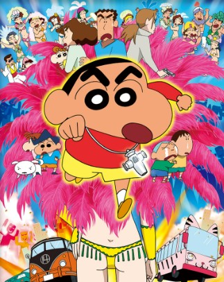
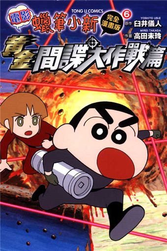

| 劇名 | 電影簡介 | |
|---|---|---|
|  | 蠟筆小新：3分鐘百變大進擊 | 2005年4月16日發佈的電影《蠟筆小新》系列第13作。 本作惡搞（也可說是致敬）許多令人熟悉的特攝場景及角色， 片頭的動感超人對上歷代的怪人軍團之陣仗可說是致敬以《假面騎士》為首的正統派特攝英雄的名場景。 |
|  | 蠟筆小新：Amigo！森巴入侵計畫 | 是《蠟筆小新》2006年4月15日發佈的電影，系列第14作。 利用生物科技製造出的複製人襲擊真正的人類並讓真人突然失蹤消失， 又或者是複製人成為詭異的森巴舞者以及變成怪物， 以上種種駭人、令人震驚的場景描寫及令人留下懸念的表現手法在以往的蠟筆小新劇場版中較為少見， 甚至於在尾聲時還能來上一筆。 |
|  | 蠟筆小新：黃金間諜大作戰 | 《呼風喚雨！黃金間諜大作戰》是第十九部蠟筆小新電影， 這是小新作品中前所未有的間諜動作大片。 在本片中，小新將一展職業特工的不凡身手。 |
| 蠟筆小新：超級美味！B級美食大逃亡！！ | 是日本在2013年4月20日上映的《蜡笔小新》第21部电影。 春日部防衛隊一行人被託付了重要的醬汁， 而被牽扯進A級與B級料理的紛爭中。 |